Pasos a seguir:
• Se ingresa a http://www.costco.com.mx/
• Se listan las categorías principales y toma las 8 primeras.
• Se crea un estudio de Card Sorting en Optimal Workshop.
• Se toman 15 Productos con sus respectivas imágenes. Busca elementos que podrían generar
dudas a la hora de clasificarlos en las categorías existente.
• Se incluye las categorías y productos en el estudio en Optimal Workshop.
• Se busca un número de usuarios a partir del resultado punto anterior para que realicen la prueba.
• Se determina a qué categoría debe pertenecer cada producto teniendo en cuenta la frecuencia
porcentual de la tarjeta. Y se generan sugerencias para mejorar la estructura de menú o la
presentación de productos del Sitio Web a partir de los resultados.
Solución
| Categorias Principales |
8 primeras |
15 productos clasificados por el sitio |
| Electrónica |
Electrónica |
Guitarra Acústica E. |
- |
| Línea Blanca |
Línea Blanca |
Aspiradora Manual |
A. Acondicionado |
| Muebles y Hogar |
Muebles y Hogar |
Purificador de Aire |
Limpia Alfombras |
| Vinos y Licores |
Vinos y Licores |
Cerveza Clara |
Zoma Te Termo |
| Comidas y Bebidas |
Comidas y Bebidas |
Te en Bolsitas |
Jugo sin Alcohol |
| Joyas y Ropa |
Joyas y Ropa |
Ropa Infantil |
Gorra (Adidas) |
| Bebe y Juguetes |
Bebe y Juguetes |
Xbox-chatpad |
Monitor-audiovideo |
| Deportes y Certificados |
Deportes y Certificados |
Telescopio |
Maleta de Mano |
| Salud y Belleza |
- |
- |
- |
| Optica |
- |
- |
- |
| Jardín, Flores y Mascotas |
- |
- |
- |
| Ferretería y Automotriz |
- |
- |
- |
| Negocios y Papelería |
- |
- |
- |
Imágenes de Productos usados durante el Card Sorting:
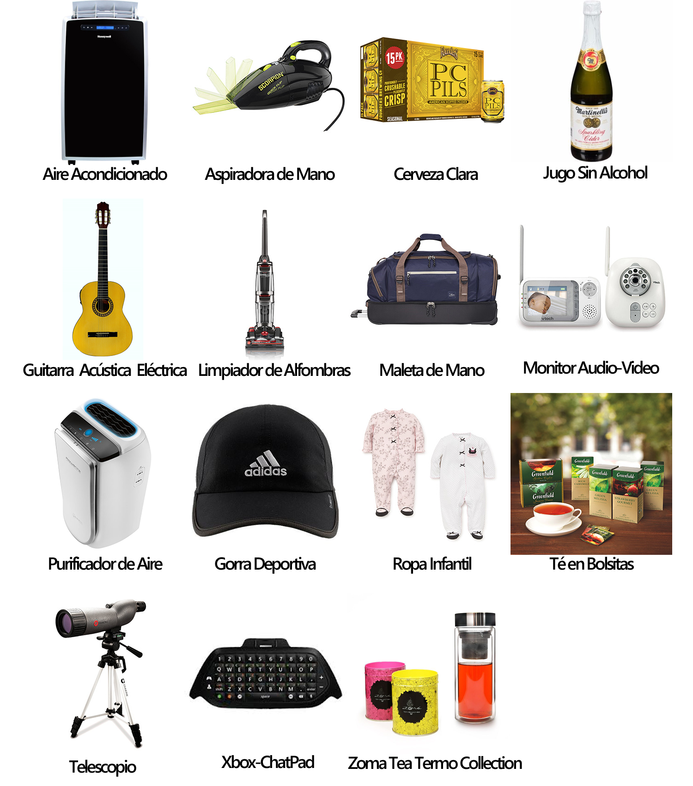
Proceso en el desarrollo de estudio en Optimal Workshop:
1. Configuramos el proyecto
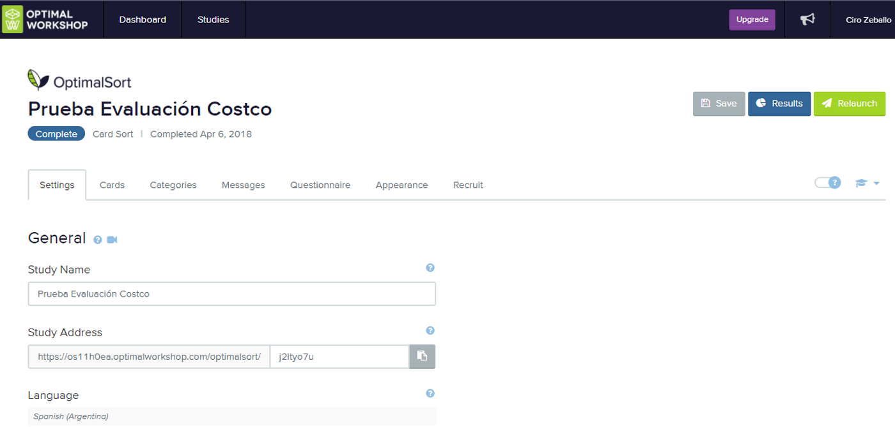
2. Cargamos las Cards del experimento
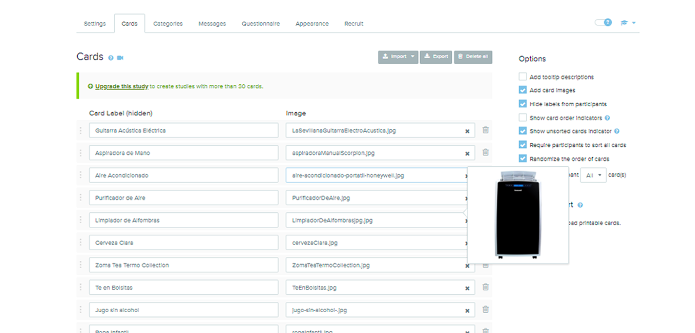
3. Cargamos las categorias principales
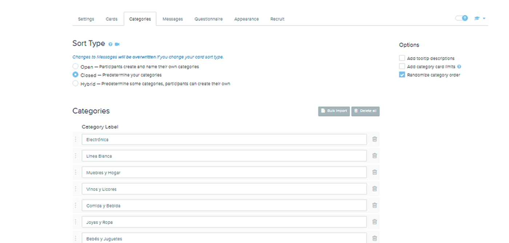
4. Configuramos mensaje de Bienvenida
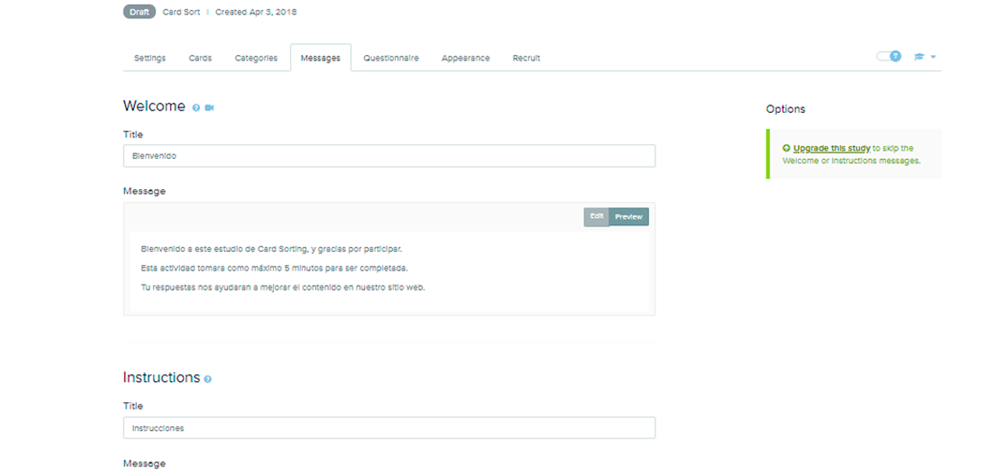
5. Hacemos propuesta de preguntas previas
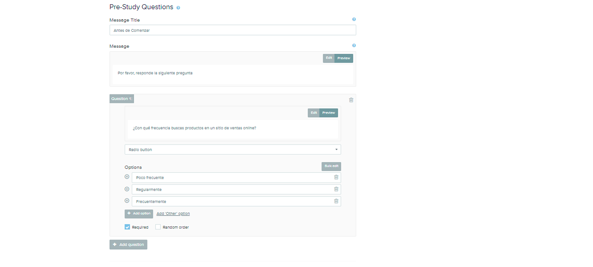
6. Resumen del experimento
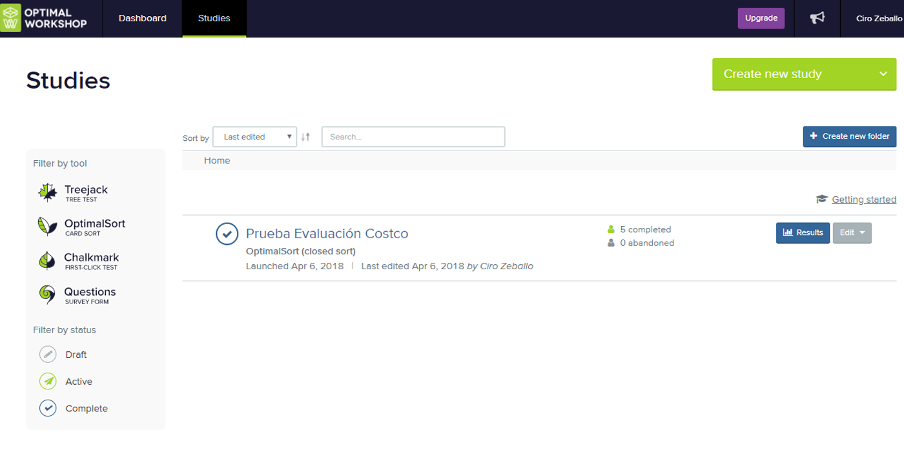
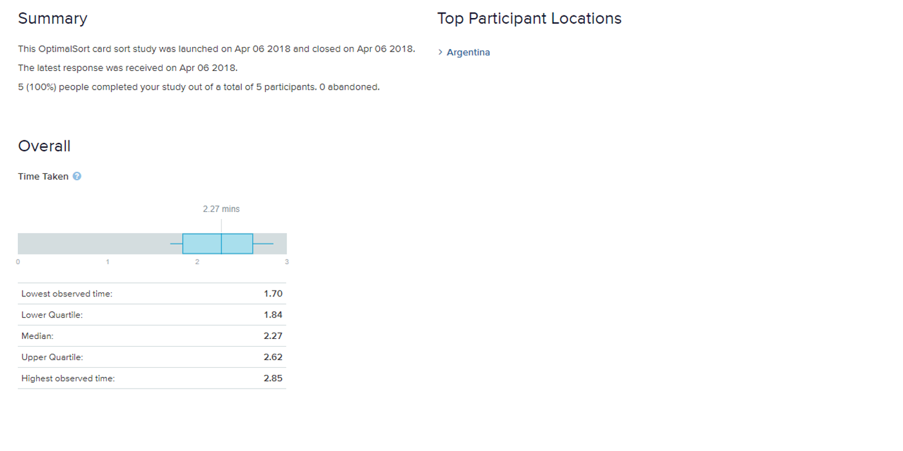
7. Analisis de participantes
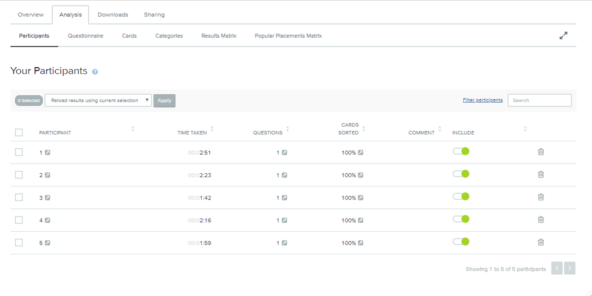
8. Resultados de preguntas previas
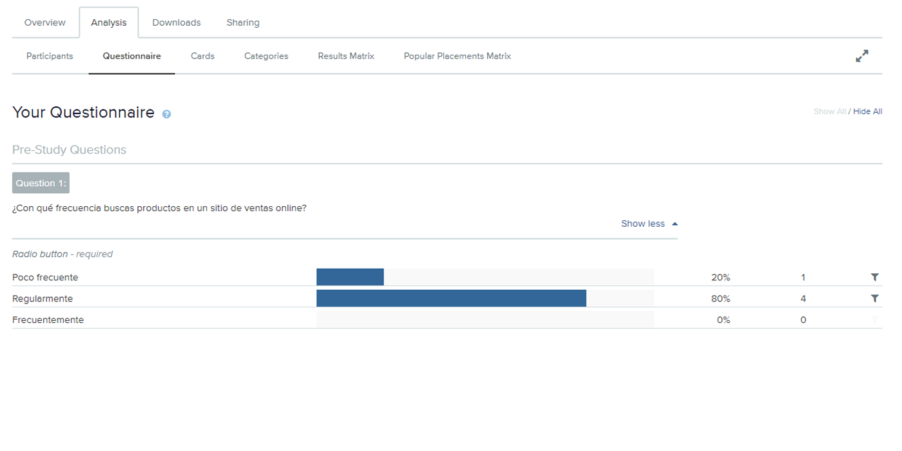
9. Analisis de cards
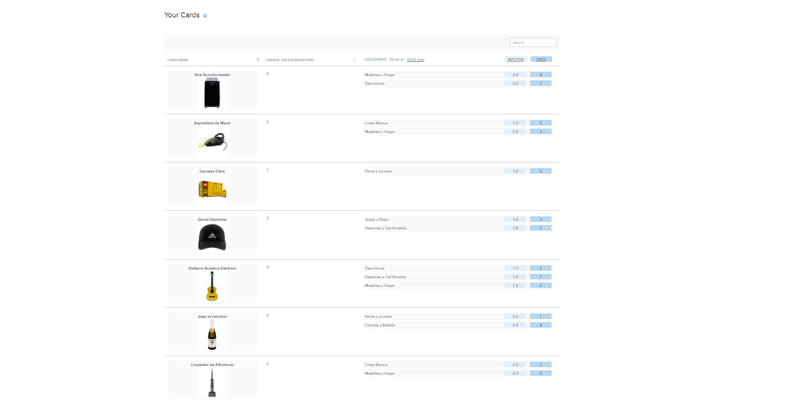
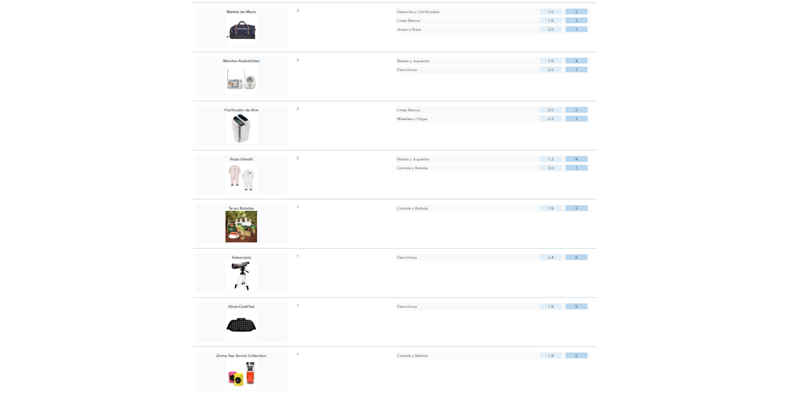
10. Analisis de categorias
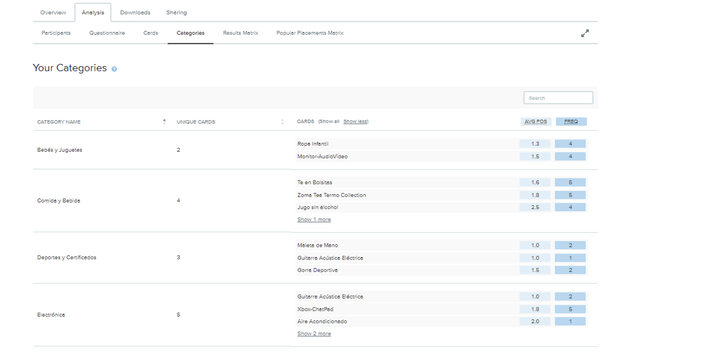
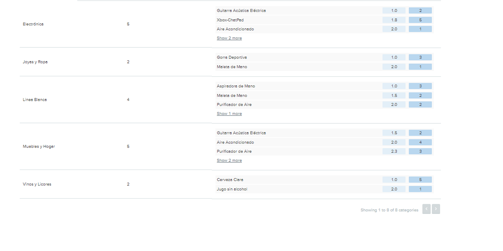
11. Resultados reales
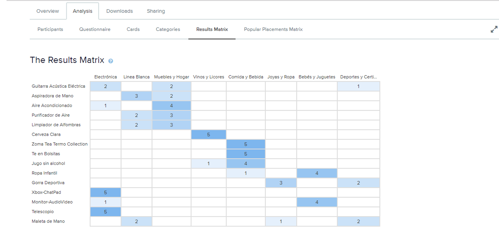
12. Resultados porcentuales
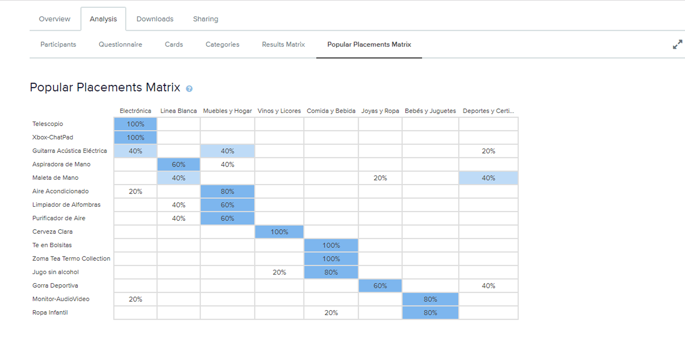
Conclusiones en base a los resultados:
• Tenemos 5 participantes, Argentinos; Todos terminaron el ejercicio.
• El tiempo medio del ejercicio fue de 2.27, con un máximo de 2.85 (2:21min.) y mínimo de 1.70 (1:42min.).
• En cuanto a frecuencia de búsquedas de productos en una plataforma de ventas en línea vemos que el 80%
de los participantes lo realiza de forma regular, un 20% lo hace muy pocas veces, y no hay nadie que
solo haga búsquedas de este tipo sin considerar otras opciones.
• Analizando los resultados por tarjeta vemos que: hay 5 productos de los 15, que pertenecen una
única categoría seleccionada, por lo que los mismos nos dicen que no hay dudas de que ellos deben
clasificarse allí. Hay 6 productos que están entre dos categorías en partes casi iguales ya sea por
una relación del tipo 2-2-1, o 2-3, por lo que no es tan claro a que categoría pertenecen, por lo
cual se puede hacer una segunda investigación para sacar mejores conclusiones, y hay 4 productos
que a pesar de tener dos categorías en su clasificación se observa una cierta tendencia hacia una
de ellas con una puntuación de 4-1.
• Observando el resultado en el apartado de categorías se muestra que hay 4 de las 8, que poseen
más del doble de productos que actualmente están categorizados en Costco, inclusive para destacar
la categoría de Electrónica tiene asignado 5 productos, cuando en los productos que usamos para la
prueba solo hemos tomado uno solo perteneciente a ella en base a lo que Costco ofrece.
• Por ultimo teniendo en cuenta los resultados de la Popular Placements Matrix, vemos que 9 productos
están categorizados entre un 80% y 100%, pero con respecto al resto de ellos, 4 se encuentra en una
relación 60% compientiendo contra un 40%, por lo que usaría más pruebas para despejar dudas, y los 2
productos restantes en proporciones iguales, por lo que estos sin dudas necesitan mayor análisis.
Recomendación tras los resultados y conclusiones obtenidas la clasificación debería ser:
| Producto |
Categorías |
Observación |
| Cerveza Clara |
Vinos y Licores |
Concluyente |
| Te en Bolsitas |
Comidas y Bebidas |
Concluyente |
| Telescopio |
Electrónica |
Concluyente |
| Xbox-ChatPad |
Electrónica |
Concluyente |
| Zoma Tea Termo Collection |
Comida y Bebidas |
Concluyente |
| Aire Acondicionado |
Mueble y Hogar |
Concluyente |
| Jugo sin Alcohol |
Comida y Bebidas |
Concluyente |
| Monitor-AudioVideo |
Bebés y Juguetes |
Concluyente |
| Ropa Infantil |
Bebés y Juguetes |
Concluyente |
| Guitarra Acústica |
--- |
Realizar análisis extra |
| Maleta de mano |
--- |
Realizar análisis extra |
| Aspiradora de mano |
--- |
Realizar análisis extra |
| Limpiador de alfombras |
--- |
Realizar análisis extra |
| Purificador de Aire |
--- |
Realizar análisis extra |
| Gorra Deportiva |
--- |
Realizar análisis extra |
*Con respecto a los productos que necesitan análisis extras realizo propuesta de Card Sorting abierto.